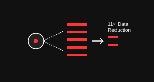
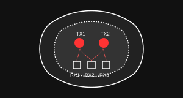
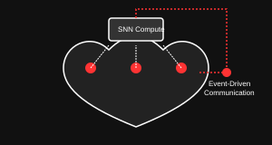
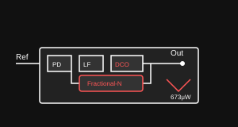
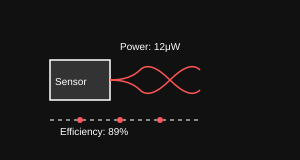
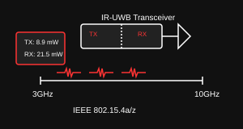
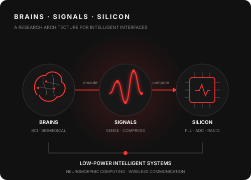
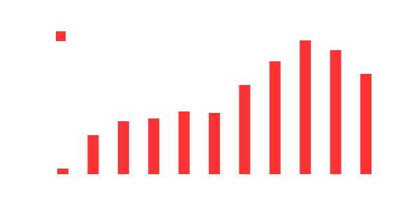

Event-based system with >11× loss-less data reduction for high-bandwidth intracortical BCIs

Spatially diverse 2TX-3RX galvanic-coupled system for tether-less distributed BCIs

SNN-based near-sensor computation and event-driven body-channel communication

Low-power dividerless design with inherent frequency-capture capability

Global charge-redistribution adiabatic drive achieving 69% power reduction

3-10GHz design for IEEE 802.15.4a/z applications
I'm currently at IMEC and the University of Groningen, focusing on developing next-generation circuits and systems for biomedical applications, particularly brain-computer interfaces and wireless communication.
My research interests include:


Growth in citations from 2016 to 2024
IEEE transactions on biomedical circuits and systems, 2024
Citations: 4
2024 IEEE International Solid-State Circuits Conference (ISSCC) 67, 102-104, 2024
Citations: 3
IEEE transactions on biomedical circuits and systems, 2024
Citations: 2
IEEE Biomedical Circuits and Systems Conference, 2023
International Solid-State Circuits Conference, 2022
European Solid State Circuits Conference, 2021
Email: yuming.he@imec-nl.nl